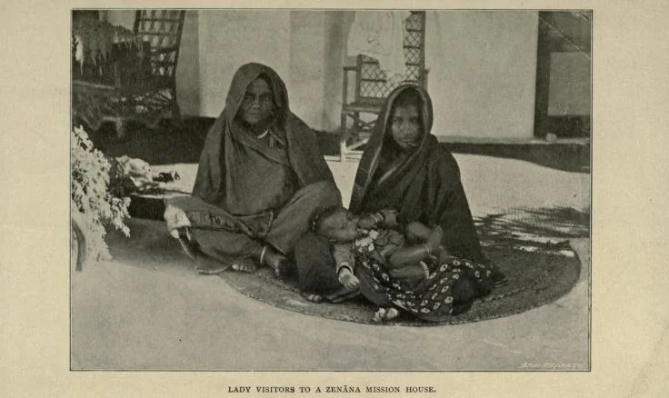
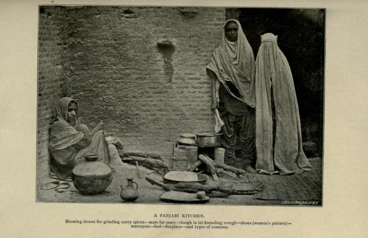
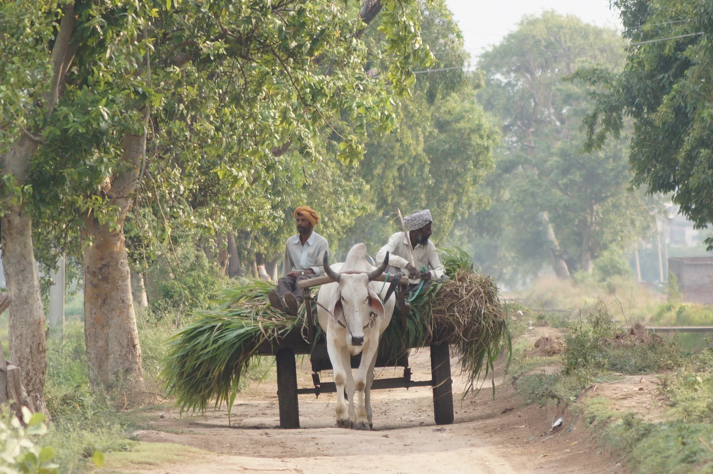
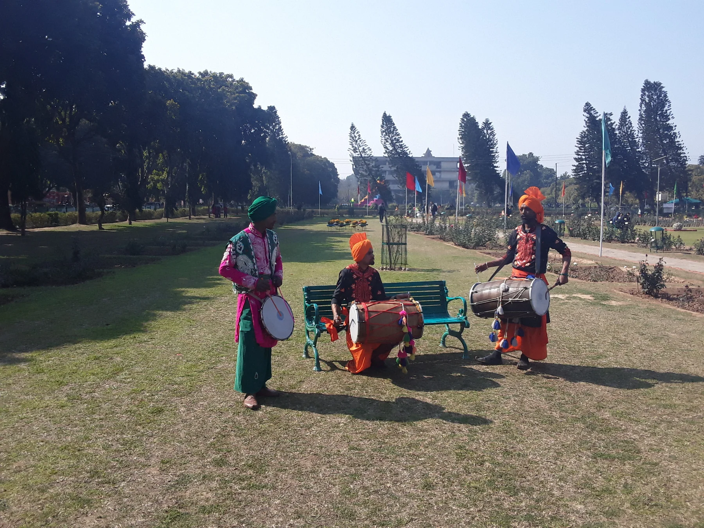
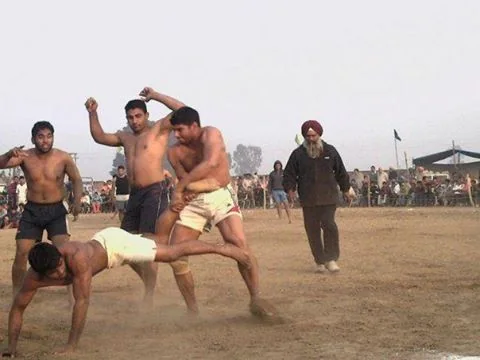

A VISUAL ARCHIVE
See the stories.
Real photographs and archival photographs connected to Punjab's people, homes, crafts and everyday life. Dates and image credits are shown with each record.








Archive note: the 1899 images are archival photographs. They are historical records, not modern photographs. The other images are real photographs of the named places, people or practices. They are visual references and do not by themselves authenticate every regional detail of an object or custom.